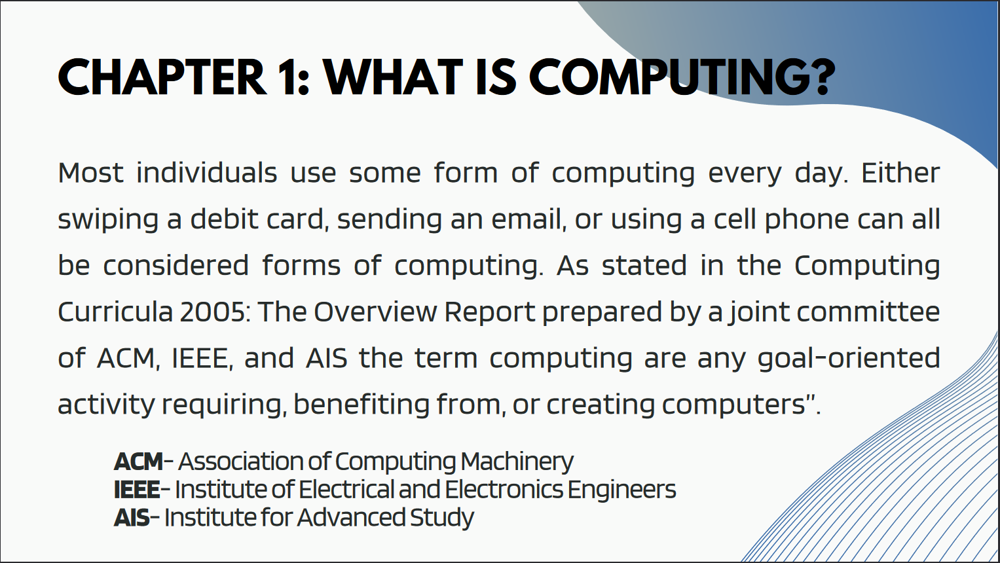
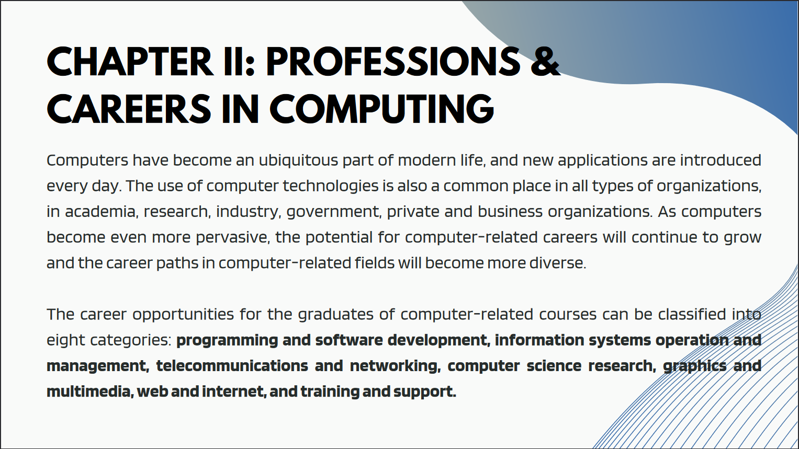
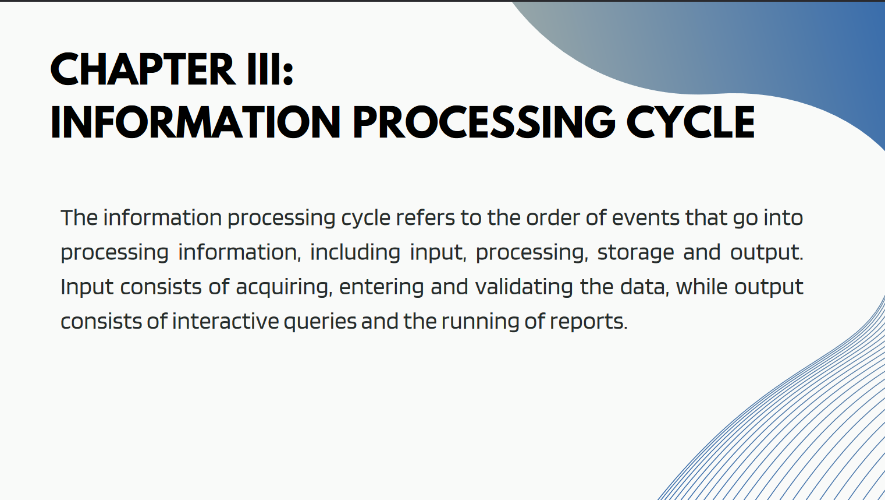
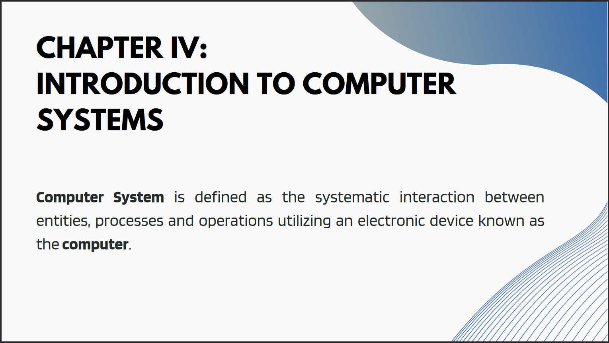
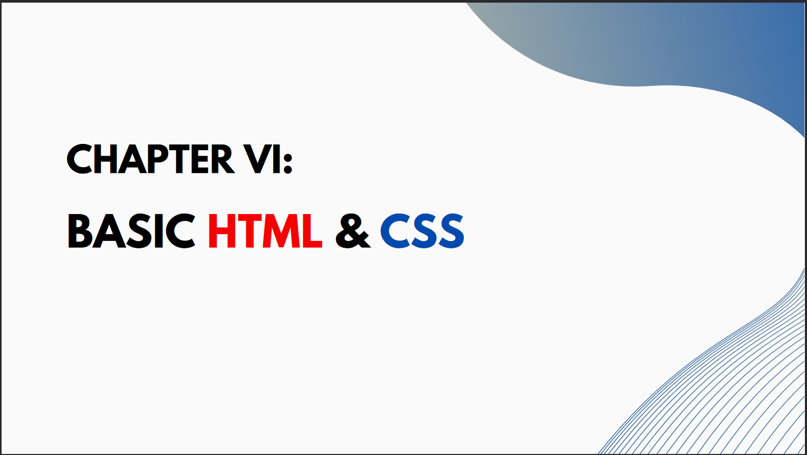
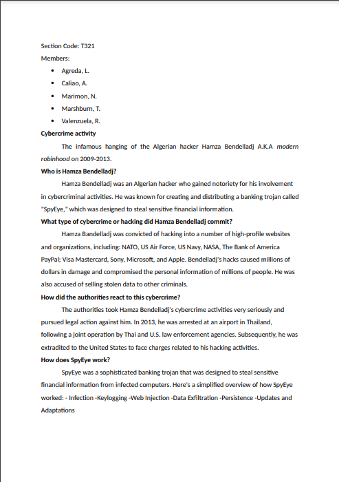
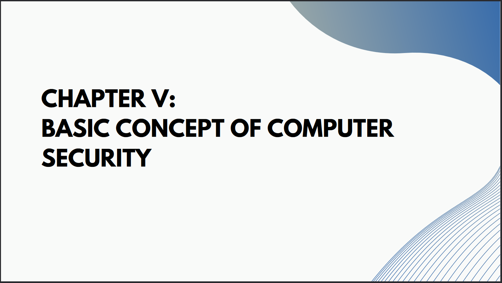

IT111 Blog Entries

Chapter 1 discusses about what is computing, my learnings is that computing involves solving problems and completing tasks with the use of computers. Computers is a programmable device that stores, retrieves, and processes data. Later on, it involves topics about the generations of the computer history , from the abacus to modern computers. Then it discusses about how computers impacts industries such as education, business, marketing, military, healthcare , and communications.
My learnings from chapter 2 are the various careers that exist within computing. A lot of careers that involves computing are varied, there is the programming and software development, information systems operation and management, telecommunications and networking, web and internet, computer science research, graphics and multimedia, and then training and support.
What I've learned from chapter 3 are the following topics. Data is raw in that it needs to be processed while information is organized data that can be read by a human with the use of a computer. There's data processing which involves a sequence of events such as input, process, storage, and then output.
In Chapter 4, my learnings are about hardware, software, peopleware, and dataware. They are the four components in a computer system. Hardware is the physical component that makes up the computer system. Software are applications, scripts, and programs that run on a device. People ware refers to people who work with the computer. Dataware refers to data that came from the software and systems used for databases.
In Chapter 6, we were thought the basics of HTML and CSS. We were assigned to make a simple webpage consisting of our likes and dislikes. Then we were to make a wireframe for this major output webpage. Our learnings is applied here, in this major output.
This was a group activity about famous cybercrime cases that our group made during September.
My Favorite Lesson
Chapter 5 is my favorite lesson because it discusses about security which I am not familiar with but is a topic that I desperately need to learn because I use devices that may be compromised if I lack the knowledge about compter security. It also discusses about cybercrimes such as cyberbullying and hacking, these are the crimes I should watch out for. Counter measures are what I like about this lesson, it discusses about how to protect oneself's devices through the use of services such as firewalls and proxies.